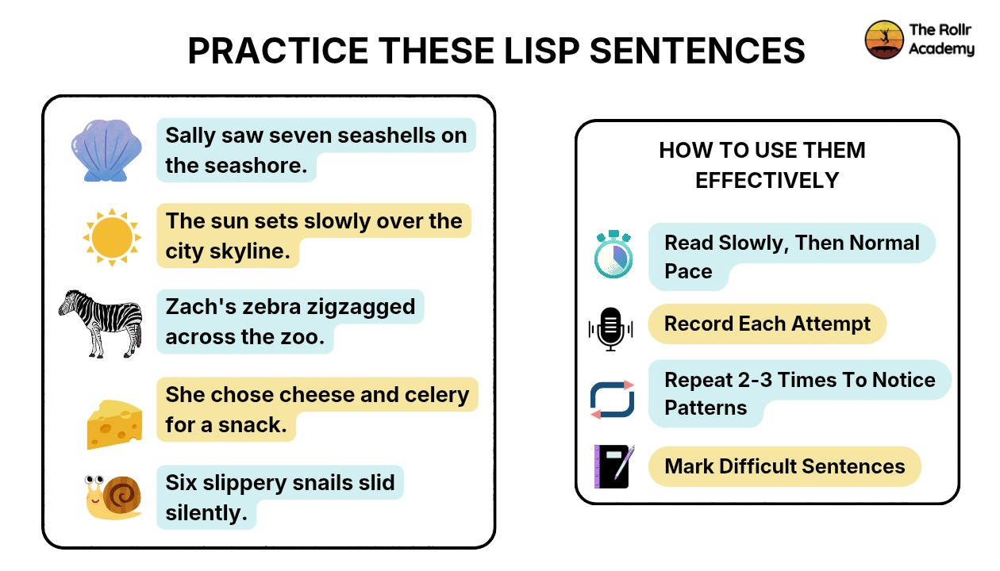

Introduction
Ever notice your “S” sounds coming out kind of fuzzy, or maybe they sound more like a “th”?
If so, this could be one of the first signs of developing a lisp.
You don’t need much time to check. Just a few focus minutes. With the right words, a few practice phrases, and some easy listening tricks, you can tell pretty fast if your “S” sounds the way it’s supposed to.
In this article, you’ll learn what to listen for in your own speech, get lists of handy words to test out, plus simple tips for figuring out what’s really happening. There are even some practice sentences including ones for lateral lisps so you’ll spot the differences and get on the path to clearer speech.
What You'll Learn:
- How to use lisp sentences for effective self-assessment
- A step-by-step method to test speech clarity at home
- The most effective lisp test words for symptom recognition
- Real lisp sentence examples to evaluate everyday speech
- Key signs that indicate different types of lisps
- When to consider professional evaluation
How to Self-Assess for a Lisp
If you take self-assessment seriously and go all the way through it, then self-assessment should be a good fit for you. For this reason, self-assessment for identifying a lisp is necessary so that you may be aware of how you say the "s" and "z" sounds in your speech.
Pick a quiet area of space and find an environment in which you can focus. You can use tools like your phone and a mirror to help you.
Step-by-Step Method
A lisp usually makes 's' sounds unclear or fuzzy. Knowing that's the issue, you're ready to follow these steps:
- Record yourself reading lisp test words and practice sentences
- Use a mirror to observe tongue placement
- Listen to your recording and compare with clear speech (podcasts or videos)
- Ask a trusted person for feedback
- Repeat the process over a few days to check consistency
Pro Tip: Record yourself on two different days and compare — this helps you spot consistent patterns instead of one-time mistakes.
What to Observe
While doing the test, pay attention to:
- Does your tongue push between your teeth?
- Does the sound resemble "th" instead of "s"?
- Does speech sound wet, slushy, or unclear?
- Are certain word positions harder than others?
These observations will help you interpret your results more accurately.
Lisp Test Words (By Sound Position)
When you practice those "s" and "z" sounds in different spots in words, you start picking up on patterns pretty quickly.
Take a look at the chart below. It's got sample words from the test. Just use it to check how you're doing — it makes self-assessment way simpler.
| Category | Description | Example Words | What to Observe |
|---|---|---|---|
| S-Initial Words | Words where "s" appears at the beginning. Easiest for identifying a lisp. | sun, soap, seven, silly, super, sister | Check early airflow and tongue placement |
| S-Medial Words | Words where "s" appears in the middle. Slightly more complex. | beside, missing, pencil, lesson, whistle | Notice if clarity drops within the word |
| S-Final Words | Words ending with "s". Helps detect subtle articulation issues. | bus, dress, mouse, house, face, glass | Check if final "s" is weak or distorted |
| Z Sound Words | Words with "z" sound (voiced version of "s"). | zoo, zero, zipper, buzzing, fizzy | Observe if buzzing sound is clear or softened |
| Blends (Complex) | Words with combined consonants. Most challenging for articulation. | snake, sleep, smile, street, splash, school | Check airflow control and sound clarity in connected speech |
Lisp Test Sentences
You've already gone through each word individually. Next, move on to lisp sentences. By practicing entire sentences (not individual words) you will find out if you can successfully handle the lisp — and if so, how much improvement you've made without the assistance of anyone else.
Practice Sentences
- Sally saw seven seashells on the seashore.
- The sun sets slowly over the city skyline.
- Zach's zebra zigzagged across the zoo.
- She chose cheese and celery for a snack.
- Six slippery snails slid silently.
How to Use Them Effectively
These sentences help you practice tricky sounds and get comfortable speaking the way people do every day.
- Read slowly first, then at a normal pace
- Record each attempt
- Repeat 2–3 times to notice patterns
- Mark which lisp sentence examples feel most difficult

Ref: The Lisp Academy — Practice These Lisp Sentences & How To Use Them Effectively
Advanced Practice: Lisp Sentence Examples
To deepen your assessment, try these additional sentences for people with a lisp. These include varied positions and complexity.
Natural Sentences (Everyday Use)
These sentences test how you speak when you aren't "trying" too hard.
- The bus stops at the station.
- I lost my pencil in the classroom.
- Someone left a glass on the desk.
Intermediate Sentences
- Sam sells socks in a small shop.
- The silver spoon slipped into the soup.
- Susan sang softly in the silent room.
Challenging Sentences
- Seven slippery snakes slid silently across the sand.
- She sells six shiny seashells by the seashore.
- The strong storm swept across the silent sea.
They're great for spotting areas where a lateral lisp causes trouble, especially when your airflow gets thrown off.
What Your Results May Mean
After practicing words to test if you have a lisp and full sentences, you'll begin to notice patterns. Understanding these patterns is key to symptom recognition.
Common Interpretations
- If "s" sounds like "th" → likely a frontal (interdental) lisp
- If speech sounds wet or slushy → likely a lateral lisp
- If only certain positions are difficult → mild or positional lisp
- If difficulty increases in sentences → issue with connected speech
When to Be Concerned
If you keep hearing a lisp in your test sentences, that's usually a sign something's off with articulation. Figuring out why is key.
You can check out resources like the Lisp Academy guide on what causes a lisp to help you explore underlying reasons such as tongue placement, oral habits, or developmental factors.
Common Mistakes During Self-Assessment
Self-testing can sometimes lead to inaccurate conclusions if not done carefully.
Mistakes to Avoid
- Rushing through lisp sentence test practice
- Ignoring recordings and relying only on self-perception
- Testing only single words instead of full sentences
- Not repeating the test over multiple sessions
Best Practices
- Combine minimal pairs and sentences
- Use consistent recording conditions
- Focus on clarity, not speed
- Track progress over time
How Lisp Differs from Other Speech Issues
Sometimes people confuse a lisp with additional articulation disorders.
For example, trouble with "r" sounds is an issue known as rhotacism and needs its own evaluation.
If you're unsure, compare your speech with the detailed rhotacism guide by Rollr Academy to understand how these speech patterns differ.
Key Differences
- Lisp affects "s" and "z" sounds
- Rhotacism affects "r" sounds
- Lisp often involves airflow issues
- Other disorders may involve tongue tension or placement
Is Lisp Declarative or Imperative? (Clarifying a Common Confusion)
Some people searching for "is lisp declarative" or "is lisp imperative" are actually referring to the programming language, not the speech condition.
Clarification
- Lisp (speech issue) → articulation disorder
- Lisp (programming) → a coding language
- Grammar tools do not detect lisps
Honestly, this confusion shows up all the time, especially if you search for "lisp grammar" or "Grammarly lisp." Once you know the difference, it's pretty straightforward.
How to Use These Exercises for Improvement
Although this guide focuses on symptom recognition, these exercises can also double as early lisp exercises.
Simple Practice Routine
- Start with lisp test words
- Move to short sentences
- Practice daily for 5–10 minutes
- Record progress weekly
Focus Areas
- Tongue placement behind teeth
- Controlled airflow
- Clear "s" sound production
- Smooth transition into connected speech
When to Seek Professional Help
Self-assessment is helpful, but it has limitations.
Consider Professional Evaluation If:
- The lisp persists over time
- Speech clarity affects communication
- The issue causes confidence concerns
- There is no improvement with practice
Speech-language pathologists use structured speech therapy materials and advanced assessments beyond basic lisp sentence generator tools.
Ready to Find Your True Voice?
Join The Lisp Academy — a structured, evidence-based program designed for adults. 15 minutes a day, 100% private.
Final Thoughts
Trying out lisp sentences and listening carefully to how you say certain words can really help you get a feel for your speech. It doesn't replace seeing a specialist, but honestly, it's a solid first move if you're trying to spot any issues and figure out what to do next.
Consistency is the key: observe, record, and reflect. With the right approach, even small improvements in articulation drills and speech practice may send a big signal over time.
Ready to Take the Next Step?
If in your self-assessment you find that you consistently struggle with lisp sentences or certain sounds — don't ignore it. Early treatment can greatly help increase your clarity and confidence.
Keep practicing, and for faster progress, explore the Lisp Academy guide on what causes a lisp. If you're unsure about other speech patterns, The Rollr Academy for rhotacism can help you compare and understand the differences.
Take action today:
- Practice the lisp test words and sentences consistently
- Track your progress with recordings
- Identify patterns in your speech
- Move to guided training if needed
Clear speech is a skill and with the right practice and support, it's absolutely achievable. Start your 5-minute self-check now.
Frequently Asked Questions
No, online tools and self-assessment methods can only indicate possible signs. A confirmed diagnosis requires a qualified professional.
A variation is when differences in pronunciation slightly emerge. A lisp is when differences, especially for "s" and "z" sounds, appear consistently in all words and sentences.
Self-diagnosis for self-awareness is a good starting point. But if you notice consistent patterns, a professional should be consulted for an accurate diagnosis and advice.
Yes, lisp practice sentences are effective for both children and adults and help improve articulation.
Daily practice for 5–10 minutes can be effective, but consistency is key, especially if you're working on correct tongue placement and producing clear sound.
Sources and Clinical Research
The following peer-reviewed studies, clinical guidelines, and authoritative resources informed this article. Readers seeking further depth are encouraged to explore these sources.
ASHA: Speech Sound Disorders
Clinical overview of speech sound disorders including articulation errors such as lisps, with guidance on assessment and treatment approaches.
View SourceSpeechTherapy.org: Lisps in Speech Therapy
Comprehensive overview of lisp types, causes, and speech therapy approaches for frontal and lateral lisps in children and adults.
View SourceHome Speech Home: Speech Therapy Word Lists
Practical word lists and resources for speech therapy practice, including sound-position word targets for at-home use.
View SourceMore Than A Voice Speech Therapy: Lisp
Clinical overview of lisp as a speech disorder, covering symptoms, causes, diagnosis, treatment, and management for children and adults.
View Source